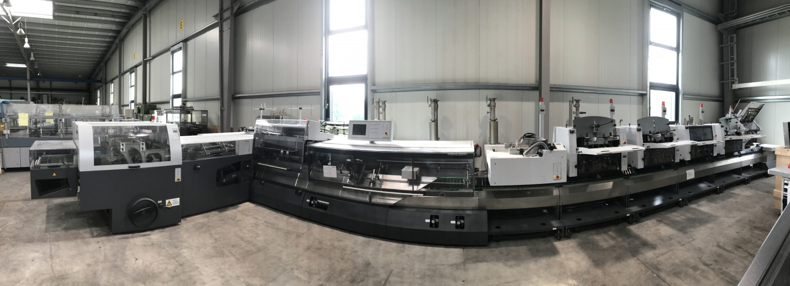

Stitchmaster ST 450 Upgrade Your Stitching Line to Full Automation — Without
Buying New
A professionally refurbished Heidelberg Stitchmaster ST 450 with guaranteed spare parts
and worldwide service — backed by the engineers who originally built it at Heidelberg.
Engineered by Heidelberg. Appreciated by Müller Martini.
The ST 450 is Heidelberg's final and most advanced Stitchmaster generation. Many features
and components of today's Müller Martini Primera are based on Stitchmaster engineering.
With Allaoui, you can now configure a fully refurbished Heidelberg Stitchmaster line — a modern, globally
serviced saddle stitching solution at a fraction of the cost of buying new. Expect six-figure
savings compared to a new machine, with no compromise on performance or support.
Five reasons the ST 450 — Heidelberg's final and most advanced Stitchmaster generation — earns our
recommendation for shops that need real production performance without the price of new.
01
Real production speed
14,000 Cycles per Hour
Matching the top speed class of current-generation saddle stitchers. Servo-driven feeders deliver ~20%
higher net performance than the previous Stitchmaster generation — the rated speed translates into actual
throughput on the production floor.
02
Minutes from job to job
Fast Job Changes
Every module — feeders, stitcher, trimmer, stacker — is driven by its own servo motor, synchronized via
electronic shaft. Format adjustment is automatic across the entire machine. Mobile feeders can be
positioned anywhere on the gathering chain.

03
Catch errors before they ship
Quality Control Built In
IRIS camera + optional barcode reader per feeder — detects missing, double, or wrong signatures
Thickness control via gathering chain dipping — no marking on the product
Stitch control, cut control (SKO), oblique sheet monitoring, long-book detection
04
From postcards to thick catalogs
Production Versatility
80 × 120 mm to 315 × 475 mm (trimmed) · Up to 12 mm product thickness
Up to 24 feeder positions · Up to 6 stitching heads (normal + loop/omega)
Individual servo drives for every module, electronically synchronized. Dynamic offset, on-the-fly
corrections to feeder timing, stitch position, and wire length without stopping, staggered stitch at
button press — a generation ahead of conventional mechanical drives.
Refurbishment
What "Fully Refurbished" Actually Means
This isn't "cleaned up and resold." Every ST 450
goes through a comprehensive, multi-stage process by the ex-Heidelberg engineers who originally built these
machines.
01
Professional dismantling
Our technicians handle careful dismantling at origin to prevent damage.
02
Complete cleaning
Every aggregate cleaned — feeders, stitching unit, trimmer, stacker, electronics.
03
Spare-part inspection
Every aggregate systematically inspected for wear, damage, and condition.
04
Hundreds of parts renewed
All parts showing any sign of wear are replaced — not just the obvious ones.
05
Functions & safety tested
All functions and safety devices verified and documented.
06
Factory-spec reset
All incorrect settings reset to original Heidelberg factory specifications.
07
Production test run
Thorough paper test run — production-quality output verified before release.
08
Ready to produce
Leaves the workshop ready for production — not "ready to be fixed on-site."
Both are proven, high-quality saddle stitching
platforms. Here's how they compare on the specs that matter most in daily production.
Scroll to compare all machines
Spec / Feature
ST 450
Primera C140
Primera E140
Primera MC
MM Prinova
MM Prima Plus
MM Bravo Plus
Horizon iCE Stitchliner Mark IV
Segment
Mid- to high-volume · full automation
Mid-volume · conventional drive
Mid-volume · format automation
High-volume · full motion control
Short- to mid-run · fast changeover
Mid- to high-volume · modular
Entry-level · smaller runs
Short-run / on-demand · digital-print finishing
Max speed
14,000 cph
14,000 cph
14,000 cph
14,000 cph
9,000 cph
14,000 cph
6,000/h (A4 from A3) · 5,300/h (A4 landscape)
Drive technology
Electronic shaft — servo per module
Conventional / PLC
Amrys — servo format only
Motion Control — servo per module
Touch screen control
Camera / barcode
IRIS + optional barcode per feeder
ASIR3 (image only)
ASIR3 (image only)
ASIR3 (image only)
Auto format adjustment
Yes — all modules
Optional (requires PLC upgrade)
Yes (Amrys)
Yes (Motion Control)
Dynamic offset
Yes
No
No
Yes
On-the-fly corrections
Yes — timing, stitch, wire
No
Limited
Yes
Staggered stitch
Yes — button press
No
No
Yes
Thickness ctrl (no marking)
Yes (chain dipping)
No
No
Yes
Mobile feeders
Yes — any position
Movable
Movable
Movable
Max feeder positions
Up to 24
Up to 12
Up to 12
Up to 12
Up to 16
6 pockets + 1 cover feeder
Stitching heads
Up to 6 (normal + loop)
Up to 4
Up to 4
Up to 4
HK 75/75V: up to 6 · HK 45: up to 8 · Loop: up to 4
1 stitching unit (Model 380)
Max trimmed format
315 × 475 mm
315 × 475 mm (w/ acc.)
315 × 475 mm (w/ acc.)
315 × 475 mm
360 × 317 mm
475 × 300 mm (single)
352 × 252 mm (A4)
Min trimmed format
80 × 120 mm
105 × 60 mm
105 × 75 mm
120 × 85 mm
Max product thickness
12 mm
13 mm
13 mm
12 mm
10 mm
10 mm std · Optional: 13 mm
10 mm (50 sheets @ 80 g/m²)
Paper weights
53–350 g/m² · coated 74–350 g/m²
Trimmer
Three-knife
Three-knife
Three-knife
Three-knife
Three-knife · trim 3–50 mm
Three-knife · head/foot max 50 mm · front max 50 mm
Three-knife (Model 449) · Optional: 4th/5th knife
Three-knife
Service & spare parts
Allaoui + ex-Heidelberg engineers
Via Müller Martini
Via Müller Martini
Via Müller Martini
Via Müller Martini
Via Müller Martini
Via Müller Martini
Via Horizon
Empty cells indicate no verified manufacturer data. Values shown only where reliably
documented.
ST 450 advantages
Mobile feeders freely positionable on the chain (Primera: movable, but not freely)
Upright (vertical) feeders available — more feeder-mix flexibility
Staggered stitch via electronic shaft (Primera E140: not possible)
Runs on same B&R control platform Muller Martini later adopted for the Primera MC
Primera C130/E140 advantages over ST 450
Trimmer can be placed on the right side (ST 450: left only)
Primera E140 has automatic product thickness adjustment in trimmer
More modern touchscreen operating concept at time of comparison
Source: Heidelberg internal product handbook, p. 88–89. Comparison made pre-2011.
Primera MC and PRO came later.
Market Price Ranges — The Cost Difference
The most significant difference between these machines isn't technical — it's financial.
Like-for-like configuration assumed: ~6 feeders · automatic format change · camera-based
quality control · three-knife trimmer · stacker. All prices below reflect this comparable spec so the
comparison stays fair.
Machine
Typical market price
Notes
Primera C130/C140 (used, as-is)
Conventional, no Amrys
Primera E140 (used, as-is)
With Amrys automation
Primera MC (used, as-is)
Full servo, rare on market
Primera PRO (new)
Current production model
Müller Martini Prinova (used, as-is)
Entry / mid-volume, compact line
Müller Martini Prima Plus (used, as-is)
Mid-volume, modular
Müller Martini Bravo Plus (used, as-is)
Entry-level platform
Horizon iCE Stitchliner Mark IV (new)
Short-run / digital-print finishing
Stitchmaster ST 450 (refurbished)
Contact for quote
Fully refurbished · 6-month warranty · parts & service included
Total cost of ownership matters. Used machines are typically sold
as-is — no guaranteed service, no spare parts, no warranty. A refurbished ST 450 from Allaoui comes with all
three.
Empty price cells indicate no verified market figure on file — populated only when reliably
sourced.
Want the full picture before deciding?
Our info package includes technical specs, refurbishment scope, service terms, and market price comparisons —
delivered as a concise PDF.
If you're operating an ST 100, ST 250, ST 300, ST 350, or ST 400,
you already know the platform. The jump from an ST 400 to a 450 is bigger than most people realize.
Area
Older Stitchmasters (e.g. ST 400)
ST 450
Feeders
TAL/TAS generation — more stops, more product movement
DVU2/DHU2/CHU — servo-driven, ~20% higher net performance
Stitching heads
Hohner heads — higher wear, shorter lifespan
Heidelberg 45-N14 (built in-house) — less wear, longer life
Camera + barcode per feeder; marking-free thickness control
Stacker
Rima stacker — issues with small formats and landscape
Heidelberg CHA — full format range, reliable 2-up production
Max feeders
16
24
Trimmer
Requires accessories for extreme formats
Full range without accessories, plus 3-up (TRIO) option
The ST 450 isn't just a newer model — it's a complete platform redesign with better
feeders, better heads, better electronics, and better output quality.
Upgrade program — trade in any saddle stitcher brand or model
Trade in your current machine and receive credit toward a refurbished ST 450. We handle logistics,
dismantling, and installation. Request a trade-in valuation →
References
Proven in Production — Customer Stories from Around the World
Print shops in different markets have chosen the
ST 450 for their stitching line.
Customer site photo — Chicago
United States · Chicago, IL
Midwest Print Solutions
Commercial printing — installed 2024
Situation
Operating an older stitching line; budget for a new machine unavailable, lead time on used equipment
with reliable service was a concern.
Solution
Refurbished ST 450 — 6 feeders, 1 cover folder, IRIS camera system, CHA stacker.
Result
Installed and producing within 2 weeks. Spare parts available within days.
We needed a machine that could run reliably at high speed without the price tag of a new line. The
refurbished ST 450 from Allaoui delivered exactly that.
— John Miller, Production
Director
⚠ Placeholder — real customer data to be confirmed
Customer site photo — Stuttgart
Germany · Stuttgart
Druckhaus Weber
Magazine & short-run — installed 2024
Situation
Growing short-run magazine work required a second stitcher. Used Primeras evaluated — difficult to
source with guaranteed service.
Operational within 2 weeks. Running at 12,000 cph in daily production.
What convinced us was the complete package: a professionally refurbished machine, training, and
long-term service from the engineers who built these machines at Heidelberg.
— Thomas
Weber, Geschäftsführer
⚠ Placeholder — real customer data to be confirmed
Configure Your Machine
Configure Your ST 450
Build your ideal configuration and receive a personalised quotation. No prices shown — we
respond within 2 business days.
Step 1 of 7
Base Machine
Every Stitchmaster ST 450 from Allaoui includes the following as standard. Review and
continue to customise your configuration.
Base includes 5 vertical feeders + 1 cover folder. Add more to match your product mix —
up to 24 positions total.
0
0
Second cover folder feeder (CHU)
For products with multiple covers or insert variants.
Base feeder extension (KUS 450)
Extra chain base segments to extend the gathering line.
Step 3 of 7
Quality Control
The ST 450's electronic shaft enables quality monitoring at every stage. Included items
are standard on every machine.
✓
IRIS camera per feeder Included
Detects missing, double, or wrong signatures at every feeder position.
✓
Marking-free thickness control Included
Via gathering chain dipping — no ink mark on the product.
Barcode reader per feeder
Verify correct signatures by barcode — essential for variable-data work.
Cut control (SKO)
Verifies trim position after the three-knife trimmer.
Oblique sheet monitoring
Detects skewed sheets in the gathering chain before stitching.
Long-book detection
Catches oversize or misfolded signatures automatically.
Step 4 of 7
Stitching & Trimmer
Configure the stitching unit and trimmer options for your product range.
Loop / omega stitching heads
For wire-loop binding — calendars, ring-bound documents.
✓
Staggered stitch Included
Electronic shaft enables staggered stitch at the press of a button — no mechanical changes needed.
TRIO — 3-up production
Three simultaneous copies per gathering cycle for small-format products.
Calendar punching unit
Punch holes for wire-o / spiral binding in-line.
Sample / postcard gluing
In-line cold-glue application for inserts or samples.
Step 5 of 7
Trade-In
Do you have an existing saddle stitcher to trade in? We accept any brand or model,
handle logistics, and apply the credit to your ST 450.
Step 6 of 7
Service & Warranty
Every machine comes with the standard package below. Add optional upgrades to match your
production requirements.
✓
6-month parts warranty Included
Covers all components replaced during the refurbishment process.
✓
On-site installation & commissioning Included
By ex-Heidelberg / PPL engineers at your facility.
✓
Operator training Included
Full operator and maintenance training during installation.
Extended warranty — 18 months
Extend parts warranty coverage to 18 months from installation date.
Remote support package
Direct line to PPL Leipzig engineers for remote diagnostics and troubleshooting.
Annual service contract
Scheduled preventive maintenance visits — keeps your machine at factory spec.
Shipping & logistics coordination
Allaoui handles full transport from PPL Leipzig to your facility.
Step 7 of 7
Your Quote Request
Almost there — tell us who you are and we'll send your personalised quotation within 2
business days.
✓
Quote request sent!
We've received your configuration and will send a personalised quotation to your email within 2
business days. A member of the Allaoui team will also follow up directly.
Allaoui Graphic Machinery is a specialist in used and refurbished print finishing equipment, based in Aachen,
Germany, serving customers worldwide. For the ST 450 program we partner with ex-Heidelberg postpress engineers
who built these machines at the original Leipzig factory.
No — Heidelberg stopped production when they exited the postpress market in 2014. But over 400
machines are still running worldwide, and every ST 450 from Allaoui is fully refurbished by the ex-Heidelberg
engineers who built them.
⚠ Answer to be provided — confirm whether stream-feeder configuration is available.
How does the ST 450 compare to a Muller Martini Primera?
On many specs — feeder count, barcode capability, mobile feeders, stitching heads — the ST 450
matches or exceeds the Primera, at a significantly lower price point. See the full
comparison →
Do you offer installation and training?
Yes — on-site installation, commissioning, and operator training by ex-Heidelberg engineers,
available worldwide.
Can I trade in my current saddle stitcher?
Yes — any brand and model. We handle logistics, dismantling, and installation. Trade-in credit
applied toward your ST 450. Describe your machine →
What warranty do I get?
Every refurbished ST 450 includes a 6-month parts warranty. Extended warranty (18 months)
available as an option.
How long does delivery and installation take?
⚠ Typical lead time to be supplied by Omar.
Do you ship internationally?
Yes — Allaoui serves customers across Europe, the Americas, Asia, Middle East, and Africa.
Ready to explore? Configure your Stitchmaster ST 450 and get a personalized
quote.